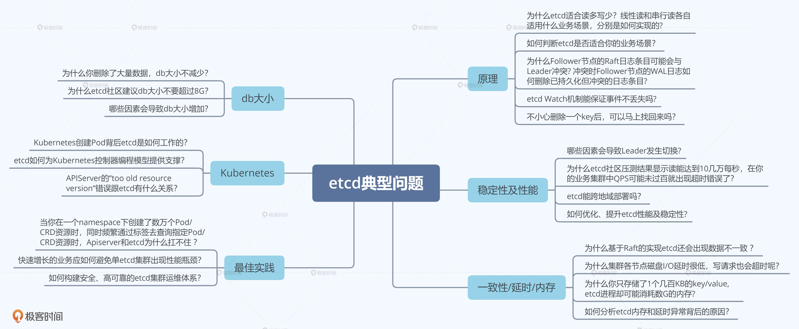
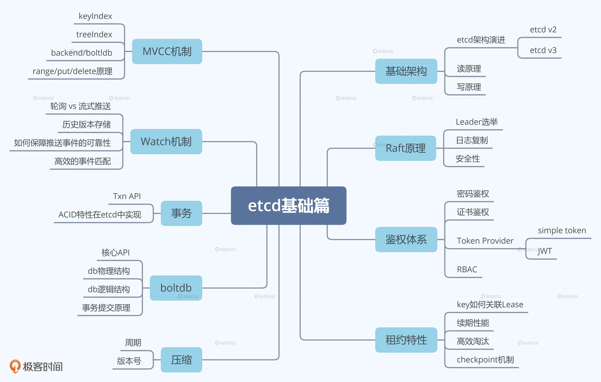
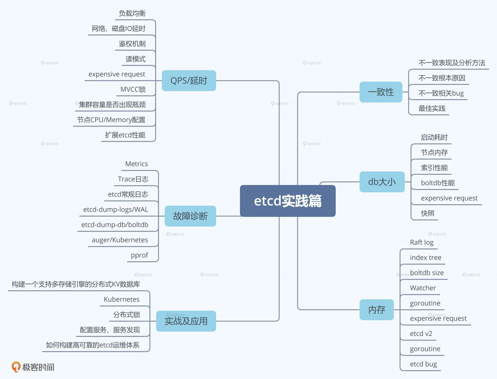

- 00 开篇词 为什么你要学习etcd_.md.html
- 01 etcd的前世今生：为什么Kubernetes使用etcd？.md.html
- 02 基础架构：etcd一个读请求是如何执行的？.md.html
- 03 基础架构：etcd一个写请求是如何执行的？.md.html
- 04 Raft协议：etcd如何实现高可用、数据强一致的？.md.html
- 05 鉴权：如何保护你的数据安全？.md.html
- 06 租约：如何检测你的客户端存活？.md.html
- 07 MVCC：如何实现多版本并发控制？.md.html
- 08 Watch：如何高效获取数据变化通知？.md.html
- 09 事务：如何安全地实现多key操作？.md.html
- 10 boltdb：如何持久化存储你的key-value数据？.md.html
- 11 压缩：如何回收旧版本数据？.md.html
- 12 一致性：为什么基于Raft实现的etcd还会出现数据不一致？.md.html
- 13 db大小：为什么etcd社区建议db大小不超过8G？.md.html
- 14 延时：为什么你的etcd请求会出现超时？.md.html
- 15 内存：为什么你的etcd内存占用那么高？.md.html
- 16 性能及稳定性（上）：如何优化及扩展etcd性能？.md.html
- 17 性能及稳定性（下）：如何优化及扩展etcd性能_.md.html
- 18 实战：如何基于Raft从0到1构建一个支持多存储引擎分布式KV服务？.md.html
- 19 Kubernetes基础应用：创建一个Pod背后etcd发生了什么？.md.html
- 20 Kubernetes高级应用：如何优化业务场景使etcd能支撑上万节点集群？.md.html
- 21 分布式锁：为什么基于etcd实现分布式锁比Redis锁更安全？.md.html
- 22 配置及服务发现：解析etcd在API Gateway开源项目中应用.md.html
- 23 选型：etcd_ZooKeeper_Consul等我们该如何选择？.md.html
- 24 运维：如何构建高可靠的etcd集群运维体系？.md.html
- 特别放送 成员变更：为什么集群看起来正常，移除节点却会失败呢？.md.html
- 结束语 搞懂etcd，掌握通往分布式存储系统之门的钥匙.md.html
- 捐赠
00 开篇词 为什么你要学习etcd_
你好，我是唐聪，etcd活跃贡献者，腾讯资深工程师，欢迎你和我一起学习etcd。
开门见山，今天我想和你聊聊为什么要学习etcd。随着Kubernetes成为容器编排领域霸主，etcd也越来越火热，越来越多的软件工程师使用etcd去解决各类业务场景中遇到的痛点。你知道吗？etcd的GitHub star数已超过34.2K，它的应用场景相当广泛，从服务发现到分布式锁，从配置存储到分布式协调等等。可以说，etcd已经成为了云原生和分布式系统的存储基石。
另外，etcd作为最热门的云原生存储之一，在腾讯、阿里、Google、AWS、美团、字节跳动、拼多多、Shopee、明源云等公司都有大量的应用，覆盖的业务可不仅仅是Kubernetes相关的各类容器产品，更有视频、推荐、安全、游戏、存储、集群调度等核心业务。
我想为你解决哪些问题？
在工作和参与etcd社区贡献的过程中，我经常会收到各类问题咨询，同时自己也经历了各种问题。我相信你在使用Kubernetes、etcd的过程中，很可能也会遇到下面这些典型问题：
- etcd Watch机制能保证事件不丢吗？（原理类）
- 哪些因素会导致你的集群Leader发生切换? （稳定性类）
- 为什么基于Raft实现的etcd还可能会出现数据不一致？（一致性类）
- 为什么你删除了大量数据，db大小不减少？为何etcd社区建议db大小不要超过8G？（db大小类）
- 为什么集群各节点磁盘I/O延时很低，写请求也会超时？（延时类）
- 为什么你只存储了1个几百KB的key/value， etcd进程却可能耗费数G内存? （内存类）
- 当你在一个namespace下创建了数万个Pod/CRD资源时，同时频繁通过标签去查询指定Pod/CRD资源时，APIServer和etcd为什么扛不住?（最佳实践类）
当然，你在学习和使用etcd、Kubernetes过程中遇到的问题肯定远远不止这些，下面我用思维导图给你总结了更多类似问题，你可以对照自身的经历去看一下。

这门课就是为了帮助你解决这些问题而生。不过你可能会想，你能把这些东西都讲明白么？我先和你聊聊我的个人etcd经历，你就知道我为什么有自信能带你学好etcd了。
我和etcd的那些事
本科毕业后，我通过校招加入了腾讯。不到一年的时间，我就主导完成了一个亿级用户的业务核心存储平滑迁移任务。
在2015到2017的这两年时间里，为了满足业务大量的Redis诉求，我基于Redis/Codis构建了大规模的排行榜和Redis集群平台服务，支撑了公司的多个重要业务。在这期间，我积累了大量的NoSQL数据库知识与经验，为后面工作转岗到To B，负责Kubernetes的元数据存储etcd奠定了良好的基础。
2017年后，我就开始接触Docker和Kubernetes，并通过Kubernetes来解决大规模Redis集群的治理问题，提升服务的可用性、降低运维成本。
2018年，我转岗到了腾讯云，负责Kubernetes集群存储etcd治理工作。我主导构建的云原生etcd平台，支持自动化的集群管理、调度、迁移、监控、巡检、备份，成功解决了集群大规模增长过程中的各类etcd稳定性问题，支撑了万级的Kubernetes和etcd集群。
etcd平台从解决Kubernetes etcd稳定性问题，到为各类云原生产品提供etcd基础服务，再到保障开箱即用的腾讯云etcd产品化服务，它发挥着重要作用。在这个过程中，我也见证了越来越多的软件工程师加入etcd的阵营，越来越多的产品使用etcd。目前，etcd作为腾讯众多产品的基础设施，服务用户已达数亿。
同时，我也遇到了很多问题，从内存泄露到数据不一致，从节点crash到性能慢，再到死锁、OOM等稳定性问题等等。最令我记忆犹新的是，我和小伙伴王超凡通过混沌工程发现并修复了多个数据不一致Bug，其中一个Bug已经存在近3年之久，而且很严重，重启就可能会触发数据不一致。
从解决类似上面的棘手Bug到提交稳定性、性能优化PR，从提交QoS特性设计方案、POC到给新的contributor review PR，通过一点点的积累，大量周末、凌晨时间的付出，我成为了2020年etcd社区的全球Top3活跃贡献者，与Google、AWS、阿里巴巴的小伙伴们，一起推动etcd项目越来越好，服务于全球开发者。
总结来说的话，过去几年我一直在与Redis、etcd打交道，一线的经历、解决的问题都让我收获良多，所以我也非常有自信能把这些经验都交付给你。
在业务实践方面，我成功解决过众多大规模业务增长过程中，遇到的存储稳定性、可扩展性等痛点，积累了丰富的理论知识、大规模集群的实战、治理经验，能直接帮助到你今后的工作。
另外，在etcd开源项目方面，我深度参与etcd开源项目的贡献经历，让我可以从开发者的视角，为你分析问题、梳理最佳实践、解读特性设计方案、阐述社区未来演进方向等等，帮助你深度理解etcd以及分布式服务。
你应该怎么学etcd？
在我看来，etcd学习其实可以分为大中小三个目标。最大的目标我当然是希望你能够用最低的学习成本，掌握etcd核心原理与最佳实践，让etcd为你所用，帮助你解决业务过程中的各类痛点，在工作中少踩坑、少交学费，多升职、多涨薪。
但是这个大的目标怎么实现呢？
我的答案是使用拆解法。下面我给你提出了学习这个专栏的一些中等大小目标，希望你能带着这些目标进行学习，每过一段时间，回过头来看看，这些目标实现了多少？
首先，你能知道什么是etcd，了解它的基本读写原理、核心特性和能解决什么问题。
然后，在使用etcd解决各类业务场景需求时，能独立判断etcd是否适合你的业务场景，并能设计出良好的存储结构，避免expensive request。
其次，在使用Kubernetes的过程中，你能清晰地知道你的每个操作背后的etcd是如何工作的，并遵循Kubernetes/etcd最佳实践，让你的Kubernetes集群跑得更快更稳。
接着，在运维etcd集群的时候，你能知道etcd集群核心监控指标，了解常见的坑，制定良好的巡检、监控策略，及时发现、规避问题，避免事故的产生。
最后，当你遇到etcd问题时，能自己分析为什么会出现这样的错误，并知道如何解决，甚至给社区提PR优化，做到知其然知其所以然。
做到以上五个目标其实也并不容易，别着急，我们接着往下拆分。为了让你实现以上五个目标，我把专栏分为了基础和实践两大主线。每个主线里都有一个一个的小目标，我们逐个攻破就容易多了。
基础篇主线是为了帮助你建立起对etcd的整体认知，搞懂读写请求、各个核心特性背后的原理，为我们后面的实践篇打下基础。
基础篇的学习也是一个中小型分布式存储系统从0到1的实现案例解读，学习它你收获的不仅仅是etcd，更是如何构建分布式存储系统的理论知识。
我把基础篇分为了以下的学习小目标：
- etcd基础架构。通过为你梳理etcd前世今生、分析etcd读写流程，帮助你建立起对etcd的整体认知，了解一个分布式存储系统的基本模型、设计思想。
- Raft算法。通过为你介绍Raft算法在etcd中是如何工作的，帮助你了解etcd高可用、高可靠背后的核心原理。
- 鉴权模块。通过介绍etcd的鉴权、授权体系，带你了解etcd是如何保护你的数据安全，以及各个鉴权机制的优缺点。
- 租约模块。介绍etcd租约特性的实现，帮助你搞懂如何检测一个进程的存活性，为什么它可以用于Leader选举中。
- MVCC/Watch模块。通过这两个模块帮助你搞懂Kubernetes控制器编程模型背后的原理。
在介绍etcd原理的过程中，我也会从更上层的角度，为你解读分布式系统存储系统的核心技术难点是什么，常见的解决方案有哪些，以及为什么etcd要这样设计、实现。让你对整个分布式系统有更深层次的理解，明白不同存储系统只是在面对各自的业务场景的时候，选择了合适的技术方案，让你从本质上去理解分布式存储系统要解决的核心问题基本是一致的。
当然基础篇讲的远不止这些，关于基础篇的更多内容，你可以参考下面的etcd基础篇思维导图：

通过基础篇掌握好etcd核心模块原理后，实践篇我将为你解读实际使用etcd时，可能会遇到的各种问题，帮助你提前避坑、遇到类似问题时能独立分析、解决。
我把实践篇分为以下的学习小目标：
- 问题篇。为你分析etcd使用过程中的各类典型问题，和你细聊各种异常现象背后的原理、最佳实践。
- 性能优化篇。通过读写链路的分析，为你梳理可能影响etcd性能的每一个瓶颈。
- 实战篇。带你从0到1亲手参与构建一个简易的分布式KV数据库，进一步提升你对分布式存储系统的认知。
- Kubernetes实践篇。为你分析etcd在Kubernetes中的应用，让你对Kubernetes原理有更深层次的理解。
- etcd应用篇。介绍etcd在分布式锁、配置系统、服务发现场景中的应用。
更多实践篇内容你可以参考下面的思维导图：

这样一来，我们的学习目标就比较明确了。最终目标是让etcd为你所用，少踩坑、多升职加薪；而为了实现这个目标，我们需要从多方面提升自己对etcd的掌控能力，也就是实现中等目标；但进阶的难度还是比较大的，所以我们需要把一个个小目标当作基石（也就是每一节课的知识点学习），来达成个人能力的提升。
现在我们不妨就带着这些目标，共同开启etcd的学习之旅吧！
© 2019 - 2023 Liangliang Lee. Powered by gin and hexo-theme-book.